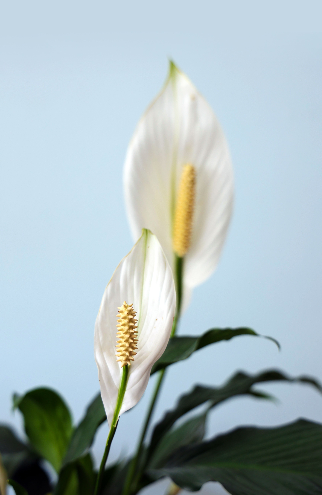

Peace Lily
Spathiphyllum
Low to bright indirect light
About once a week
50–70%
18–30°C
Peace Lily is a beautiful indoor plant with dark green leaves and white flowers. It prefers warm and humid conditions. Its elegant flowers make it a popular houseplant.
Care instructions
Light
Peace Lily can grow in low light, but bright indirect light helps it produce flowers.
Water
Keep the soil slightly moist, but do not let the plant sit in water.
Humidity
Peace Lily prefers humid air and benefits from regular misting.
Temperature
Keep the plant in a warm place away from cold drafts.
Care tips
- Do not let the soil become completely dry.
- Avoid direct sunlight.
- Keep humidity moderate to high.
- Remove dry leaves and flowers.
Community Q&A
Have a question about Peace Lily? Share it with the community.